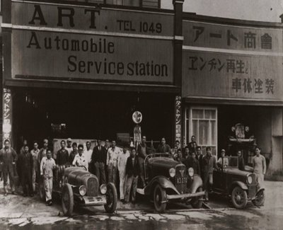
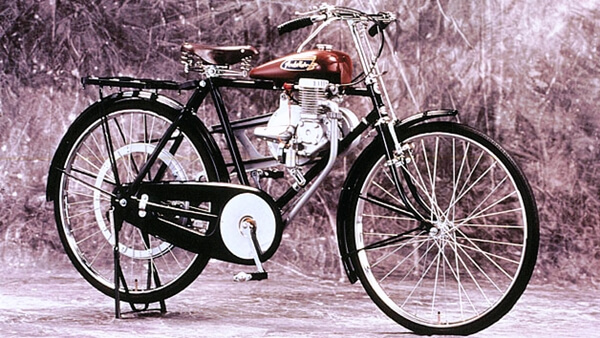
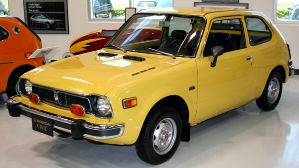
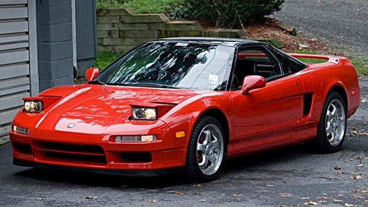
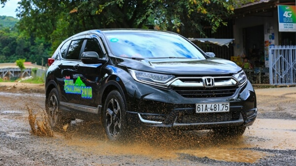

Được thành lập vào năm 1996, công ty Honda Việt Nam là liên doanh giữa Công ty Honda Motor (Nhật Bản), Công ty Asian Honda Motor (Thái Lan) và Tổng Công ty Máy Động Lực và Máy Nông nghiệp Việt Nam với 2 ngành sản phẩm chính: xe máy và xe ô tô. 25 năm có mặt tại Việt Nam, Honda Việt Nam đã không ngừng phát triển và trở thành một trong những công ty dẫn đầu trong lĩnh vực sản xuất xe gắn máy và nhà sản xuất ô tô uy tín tại thị trường Việt Nam. Honda Việt Nam tự hào mang đến cho khách hàng những sản phẩm chất lượng cao, dịch vụ tận tâm và những đóng góp vì một xã hội giao thông lành mạnh. Với khẩu hiệu “Sức mạnh của những Ước mơ”, Honda mong muốn được chia sẻ và cùng mọi người thực hiện ước mơ thông qua việc tạo thêm ra nhiều niềm vui mới cho người dân và xã hội.
Được thành lập vào năm 1996, công ty Honda Việt Nam là liên doanh giữa Công ty Honda Motor (Nhật Bản), Công ty Asian Honda Motor (Thái Lan) và Tổng Công ty Máy Động Lực và Máy Nông nghiệp Việt Nam với 2 ngành sản phẩm chính: xe máy và xe ô tô. 25 năm có mặt tại Việt Nam, Honda Việt Nam đã không ngừng phát triển và trở thành một trong những công ty dẫn đầu trong lĩnh vực sản xuất xe gắn máy và nhà sản xuất ô tô uy tín tại thị trường Việt Nam. Honda Việt Nam tự hào mang đến cho khách hàng những sản phẩm chất lượng cao, dịch vụ tận tâm và những đóng góp vì một xã hội giao thông lành mạnh. Với khẩu hiệu “Sức mạnh của những Ước mơ”, Honda mong muốn được chia sẻ và cùng mọi người thực hiện ước mơ thông qua việc tạo thêm ra nhiều niềm vui mới cho người dân và xã hội.
Tháng 10 năm 1946, xưởng sản xuất của ông ở Hamamatsu đã cho ra đời chiếc "xe đạp gắn máy" đầu tiên có pedal và bàn đạp nổ. Và chỉ 1 năm sau đó, với niềm đam mê của mình Soichiro Honda đã xây dựng một bản thiết kế mới cho loại động cơ 50cc lớn hơn và có vận tốc nhanh hơn. Vào mùa đông năm 1947, chiếc "xe đạp máy" cải tiến mang tên A-Type được sản xuất với công suất 0,5 mã lực. Automatic Google Report Of Xehoigiatot
Xem Thêm




Xem Thêm
Chỉ sau hơn 1 năm, Honda Việt Nam đã xây dựng xong nhà máy, và hoàn tất mạng lưới đại lý trên cả nước chính thức giới thiệu ra thị trường mẫu Honda Civic vào tháng 8 năm 2006. Nhằm đa dạng hóa sản phẩm, mẫu Crossover 5 chỗ Honda CR-V tiếp tục được giới thiệu đến người tiêu dùng Việt vào tháng 12 năm 2008 và Honda City vào tháng 6 năm 2013, đây cũng là 3 mẫu xe bán chạy nhất của Honda ô tô tại Việt Nam. Ngoài những dòng xe sản xuất lắp ráp trong nước, Honda Việt Nam còn nhập khẩu thêm các mẫu sedan và MPV đa dụng cao cấp là Honda Accord và Odyssey nhằm đáp ứng nhu cầu ngày càng đa dạng của khách hàng. Năm 2016, Honda Việt Nam quyết định chuyển sang nhập khẩu mẫu xe Honda Civic thay vì sản xuất lắp ráp trong nước. Hiện tại, Honda Việt Nam cũng đang sở hữu hệ thống đại lý phân phối hơn 30 Showroom tại khắp các tỉnh thành trên cả nước, đảm bảo phục vụ khách hàng một cách tốt nhất. Đánh giá hãng ô tô Honda tại Việt Nam Tại thị trường Việt Nam, Honda mới thực sự bắt đầu hoạt động kinh doanh ô tô từ năm 2006, có thể nói là khá muộn so với nhiều hãng xe khác. Nhưng ngay từ những mẫu xe đầu tiên ra mắt hãng ô tô Nhật Bản đã khẳng định được giá trị và chất lượng sản phẩm của mình, bằng chứng là bạn có thể dễ dàng bắt gặp nhiều người vẫn đang chạy xe Civic date 2006 - 2008 đầy đường. Cũng tương tự như Toyota, dòng xe ô tô Honda cũng khá lành, ít hỏng vặt, bền và rất bền. Dòng xe ô tô Honda chạy có tốt không ? Nếu để nói về một hãng xe tại Việt Nam có tính "toàn diện nhất" về tất cả các mặt như: giá cả - độ bền ổn định - tiện nghi - an toàn và tiết kiệm nhiên liệu thì chúng tôi xin được vote một phiếu cho Honda. Thực sự đây là hãng ô tô phổ thông đáng mua nhất tại thị trường Việt Nam từ các sản phẩm bình dân như Honda City, Jazz cho đến Civic, CR-V hay thậm chí là Honda Accord vẫn rất tốt, chỉ tiếng rằng Accord có mức giá còn khá cao do thuộc dòng cận cao cấp và là xe nhập khẩu nguyên chiếc Thái Lan Automatic Google Report Of Xehoigiatot
Xem chi tiết.Xem Thêm